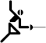
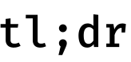

<nav class="uk-container">
<ul class="uk-breadcrumb">
<li><a href="index.html">Webis.de</a></li>
<li class="uk-disabled"><a href="#">Research</a></li>
</ul>
</nav>

<main class="uk-section uk-section-default">
<div class="uk-container">
<h1>Research</h1>
<ul class="uk-list">
<li><span data-uk-icon="chevron-down"></span> <a href="#research-competitions">Research Competitions</a></li>
<li><span data-uk-icon="chevron-down"></span> <a href="#information-retrieval-and-search">Information Retrieval and Search</a></li>
<li><span data-uk-icon="chevron-down"></span> <a href="#natural-language-processing-and-computational-linguistics">Natural Language Processing and Computational Linguistics</a></li>
<li><span data-uk-icon="chevron-down"></span> <a href="#data-mining-and-machine-learning">Data Mining and Machine Learning</a></li>
<li><span data-uk-icon="chevron-down"></span> <a href="#experiment-platforms-and-software">Experiment Platforms and Software</a></li>
</ul>
</div>

<div class="uk-container uk-margin-medium">
<div id="search-control">
<input type="text" class="uk-input" id="filter-field" placeholder="Type here to filter&hellip;"/>
</div>
</div>

<!-- list container start -->
<div class="uk-container uk-margin-medium">

<!--
SECTION Research Competitions
-->
<div class="webis-list">
<h2><a id="research-competitions"></a>Research Competitions</h2>

<a id="touche"></a>
<div class="entry" data-author="alexander bondarenko, maik froebe, johannes kiesel, nailia mirzakhmedova, maximilian heinrich, shahbaz syed, timon gurcke, meriem beloucif, alexander panchenko, chris biemann, benno stein, henning wachsmuth, martin potthast, matthias hagen, lukas gienapp, yamen ajjour" data-keywords="argumentation, shared task">
<div class="image"></div>
<div class="description">
<a href="https://touche.webis.de">Touché</a>
<span class="date">[2020 - today]</span><br>
Research Network on Computational Argumentation<br>
[<a href="https://touche.webis.de/data.html">data</a>]
[<a href="https://touche.webis.de/events.html">events</a>]
[<a href="https://touche.webis.de/publications.html">publications</a>]
</div>
</div>

<a id="pan"></a>
<div class="entry" data-author="martin potthast, tim gollub, benno stein, matti wiegmann, janek bevendorff, johannes kiesel, nikolay kolyada" data-keywords="shared task, authorship analytics, ethics">
<div class="image"></div>
<div class="description">
<a href="https://pan.webis.de">PAN</a>
<span class="date">[2007 - today]</span><br>
Research Network on Digital Text Forensics<br>
[<a href="https://pan.webis.de/data.html">data</a>]
[<a href="https://pan.webis.de/events.html">events</a>]
[<a href="https://pan.webis.de/publications.html">publications</a>]
</div>
</div>

<a id="other-competitions"></a>
<div class="entry" data-author="matthias hagen, martin potthast, benno stein, henning wachsmuth">
<div class="image"></div>
<div class="description">
Other Shared Tasks on Societal Challenges<br>
[<a href="{{ 'data.html#?q=shared+task' | relative_url }}">data</a>]
[<a href="{{ 'events.html#shared-tasks' | relative_url }}">events</a>]
[<a href="{{ 'publications.html#?q=shared+task' | relative_url }}">publications</a>]
</div>
</div>

</div>


<!--
     SECTION Information Retrieval and Search
-->
<div class="webis-list">
<h2><a id="information-retrieval-and-search"></a>Information Retrieval and Search</h2>

<a id="ir-anthology"></a>
<div class="entry" data-author="martin potthast, benno stein, sebastian guenther, matthias hagen" data-keywords="demo,service">
<div class="image"></div>
<div class="description">
Information Retrieval Anthology
<span class="date">[2021 - today]</span><br>
Collecting papers on the study of information retrieval.<br>
[<a href="publications.html#?q=ir-anthology">publications</a>]
[<a href="https://ir.webis.de">service</a>]
</div>
</div>

<!--
<a id="acqua"></a>
<div class="entry" data-author="matthias hagen" data-keywords="demo">
<div class="image"></div>
<div class="description">
<a href="http://www.informatik.uni-halle.de/arbeitsgruppen/big_data_analytics/3131652_3169416/3169416_3174877/?lang=en">ACQuA</a>
<span class="date">[2018 - today]</span><br>
Answering Comparative Questions with Arguments.<br>
[api: <a href="http://ltdemos.informatik.uni-hamburg.de/cam/api-info">CAM</a>, 
<a href="https://demo.webis.de/targer-api/apidocs/">TARGER</a>]
[demos:  
<a href="http://ltdemos.informatik.uni-hamburg.de/cam/#/">CAM</a>, 
<a href="https://demo.webis.de/targer/">TARGER</a>]
[<a href="publications.html#?q=acqua">publications</a>]
</div>
</div>
-->

<a id="conversational-search"></a>
<div class="entry" data-author="yamen ajjour, khalid al-khatib, marcel gohsen, matthias hagen, johannes kiesel, lars meyer, benno stein">
<div class="image"></div>
<div class="description">
<a href="research/conversational-search.html">Conversational Search</a>
<span class="date">[2018 - today]</span><br>
Research on information-seeking conversations with machines.<br>
[demos:  
<a href="https://infobot.webis.de/">lecturenotes infobot</a>,
<a href="https://genirsim.webis.de/">user simulation</a>]
[<a href="events.html#?q=conversational-search">events</a>]
[<a href="publications.html#?q=conversational-search">publications</a>]
</div>
</div>

<a id="args"></a>
<div class="entry" data-author="yamen ajjour, khalid al-khatib, johannes kiesel, benno stein, henning wachsmuth" data-bibkey="wachsmuth:2017f, potthast:2019b" data-keywords="demo,service">
<div class="image"></div>
<div class="description">
Args
<span class="date">[2017 - today]</span><br>
The first search engine for arguments on the web.<br>
[<a href="https://args.me/api-en.html">api</a>]
[demo: <a href="https://images.args.me/">image search</a>]
[<a href="publications.html#?q=args">publications</a>]
[<a href="https://args.me">service</a>]
</div>
</div>

<a id="chatnoir"></a>
<div class="entry" data-author="janek bevendorff, martin potthast, benno stein" data-keywords="demo,service">
<div class="image"></div>
<div class="description">
ChatNoir
<span class="date">[2010 - today]</span><br>
Research search engine with ranking explanation indexing the ClueWeb and CommonCrawl.<br>
[<a href="https://www.chatnoir.eu/doc/api">api</a>]
[<a href="publications.html#?q=chatnoir">publications</a>]
[<a href="https://www.chatnoir.eu/">service</a>]
</div>
</div>

<a id="netspeak"></a>
<div class="entry" data-author="martin potthast, benno stein, martin trenkmann" data-keywords="demo,service">
<div class="image"></div>
<div class="description">
<a href="research/netspeak.html">Netspeak</a>
<span class="date">[2006 - today]</span><br>
Technology for text correction and idiomatic writing.<br>
[<a href="http://www.netspeak.org/#developer">api</a>]
[<a href="publications.html#?q=netspeak">publications</a>]
[<a href="http://www.netspeak.org">service</a>]
[<a href="https://www.youtube.com/watch?v=vklWCIsB_jM&list=PLgD1TOdHQCI97rA9s4z1EGxRJSXCHzwBk">video</a>]
</div>
</div>

<a id="picapica"></a>
<div class="entry" data-author="martin potthast, benno stein, michael völske" data-bibkey="stein:2008c, stein:2009a, stein:2011c, gollub:2013b, potthast:2014b, stein:2019c" data-keywords="demo,service">
<div class="image"></div>
<div class="description">
<a href="research/picapica.html">Picapica</a>
<span class="date">[2005 - today]</span><br>
Technology for automated plagiarism detection.<br>
[demos:
  <a href="https://demo.webis.de/webis-trc/">essay viewer</a>,
  <a href="https://picapica.org/scientific-text-reuse/">scientific reuse</a>,
  <a href="https://demo.webis.de/wikipedia-text-reuse/">wikipedia reuse</a>]
[<a href="publications.html#?q=picapica">publications</a>]
[<a href="http://www.picapica.org/">service</a>]
[<a href="https://www.youtube.com/watch?v=XaCAMM3AnVg">video</a>]
</div>
</div>

<a id="retrieval-models"></a>
<div class="entry" data-author="tim gollub, benno stein" data-bibkey="stein:2009b, lipka:2011b" data-keywords="demo">
<div class="image"></div>
<div class="description">
<a href="research/retrieval-models.html">Retrieval Models</a>
<span class="date">[2011 - 2014]</span><br>
Interactive map to overview and compare the characteristics of well-known retrieval models.<br>
[<a href="research/retrieval-models/retrieval-models.html">demo</a>]
[<a href="publications.html#?q=retrieval-models">publications</a>]
</div>
</div>

<a id="query-analytics"></a>
<div class="entry" data-author="marcel gohsen, matthias hagen, benno stein" data-keywords="demo">
<div class="image"></div>
<div class="description">
<a href="research/query-analytics.html">Query Analytics</a>
<span class="date">[2010 - 2022]</span><br>
Second-guess the user’s intent from a search query.<br>
[<a href="https://demo.webis.de/query-segmentation/doc/rest-api-documentation.pdf">api</a>]
[<a href="https://webis.de/data#webis-qsec-10">data</a>]
[<a href="https://demo.webis.de/query-segmentation">demo</a>]
[<a href="publications.html#?q=query-analytics">publications</a>]
</div>
</div>

<a id="wikipedia-fingerprinting"></a>
<div class="entry" data-author="dennis hoppe, martin potthast, benno stein, martin trenkmann">
<div class="image">
</div>
<div class="description">
<a href="research/wikipedia-fingerprinting.html">Wikipedia Fingerprinting</a>
<span class="date">[2007]</span><br>
Search engine implementing full text queries against Wikipedia based on fingerprinting.<br>
[<a href="publications.html#?q=wikipedia-fingerprinting">publications</a>]
</div>
</div>

<a id="aisearch"></a>
<div class="entry" data-author="sven meyer zu eissen, benno stein">
<div class="image"></div>
<div class="description">
<a href="research/aisearch.html">AIsearch</a>
<span class="date">[2003 - 2006]</span><br>
Meta search engine for Web document categorization and graphical access.<br>
[<a href="https://weimar.webis.de/research/awards.html#easa-2004">awards</a>]
[<a href="publications.html#?q=aisearch">publications</a>]
[<a href="https://www.youtube.com/watch?v=i5PwDBs369g">video</a>]
</div>
</div>

</div>


<!--
SECTION Natural Language Processing and Computational Linguistics
-->
<div class="webis-list">
<h2><a id="natural-language-processing-and-computational-linguistics"></a>Natural Language Processing and Computational Linguistics</h2>

<a id="discourse-generation"></a>
<div class="entry" data-author="tim gollub, marcel gohsen, johannes kiesel, benno stein">
<div class="image"></div>
<div class="description">
<a href="research/discourse-generation.html">Discourse Generation</a>
<span class="date">[2023 - today]</span><br>
Interactive generation of discourse.<br>
[demo:
  <a href="https://futuringmachines.webis.de/">story writing</a>]
[<a href="publications.html#?q=discourse-generation">publications</a>]
</div>
</div>

<a id="human-values"></a>
<div class="entry" data-author="johannes kiesel, benno stein, henning wachsmuth" data-keywords="demo">
<div class="image"></div>
<div class="description">
<a href="research/human-values.html">Human Values</a>
<span class="date">[2022 - today]</span><br>
Analysis of human values in texts.<br>
[<a href="data.html?q=human-values">data</a>]
[demos:
  <a href="https://values.args.me/">argument analysis</a>,
  <a href="https://valueeval24.web.webis.de/">article analysis</a>]
[<a href="events.html?q=human-values">events</a>]
[<a href="publications.html#?q=human-values">publications</a>]
</div>
</div>

<a id="science-studies"></a>
<div class="entry" data-author="erik körner, harry scells, benno stein">
<div class="image"></div>
<div class="description">
<a href="research/science-studies.html">Science Studies</a>
<span class="date">[2019 - today]</span><br>
Analysis of scientific documents and actors.<br>
<!-- [<a href="publications.html#?q=science-studies">publications</a>] -->
</div>
</div>

<a id="text-summarization"></a>
<div class="entry" data-author="shahbaz syed, khalid al-khatib, michael völske, martin potthast, benno stein" data-keywords="demo">
<div class="image"></div>
<div class="description">
<a href="research/text-summarization.html">Text Summarization</a>
<span class="date">[2018 - today]</span><br>
Generating and evaluating summaries for diverse document types.<br>
[demos: <a href="https://tldr.webis.de/">summary explorer</a>, <a href="https://tldr.demo.webis.de/">summary workbench</a>]
[<a href="publications.html#?q=text-summarization">publications</a>]
</div>
</div>

<a id="computational-argumentation"></a>
<div class="entry" data-author="khalid al-khatib, matthias hagen, maximilian heinrich, johannes kiesel, nailia mirzakhmedova, tsvetomira palakarska, benno stein, martin trenkmann, henning wachsmuth" data-bibkey="alkhatib:2016b, kiesel:2017b, wachsmuth:2017f, potthast:2019b" data-keywords="demo,service" data-funded-projects="acqua,arguana-for-the-web">
<div class="image"></div>
<div class="description">
<a href="research/computational-argumentation.html">Computational Argumentation</a>
<span class="date">[2012 - today]</span><br>
Argumentation analysis in texts.<br>
[api:
<a href="https://args.me/api-en.html">argument search</a>,
<a href="https://demo.webis.de/targer-api/apidocs/">argument tagging</a>,
<a href="http://ltdemos.informatik.uni-hamburg.de/cam/api-info">object comparison</a>]
[demos:  
<a href="https://demo.webis.de/targer/">argument tagging</a>,
<a href="https://demo.webis.de/essay-scoring/">essay scoring</a>,
<a href="https://images.args.me/">image search</a>,
<a href="http://ltdemos.informatik.uni-hamburg.de/cam/#/">object comparison</a>,
<a href="https://demo.webis.de/arguana/">review analysis</a>]
[<a href="publications.html#?q=computational-argumentation">publications</a>]
[<a href="https://args.me">service</a>]
</div>
</div>

<a id="authorship"></a>
<div class="entry" data-author="janek bevendorff, anne peter, benno stein" data-keywords="demo">
<div class="image"></div>
<div class="description">
<a href="research/authorship.html">Authorship Analytics</a>
<span class="date">[2007 - today]</span><br>
Analysis and comparison of authorial style in written documents.<br>
[<a href="https://authorship.demo.webis.de/">demo</a>]
[<a href="publications.html#?q=authorship">publications</a>]
</div>
</div>

<a id="clickbait"></a>
<div class="entry" data-author="tim gollub, maik frobe, martin potthast, benno stein">
<div class="image"></div>
<div class="description">
<a href="research/clickbait.html">Clickbait</a>
<span class="date">[2016 - today]</span><br>
Analysis of clickbait messages in social media.<br>
[<a href="events.html?q=clickbait">events</a>]
[<a href="publications.html#?q=clickbait">publications</a>]
</div>
</div>

<a id="opinioncloud"></a>
<div class="entry" data-author="martin potthast, benno stein">
<div class="image"></div>
<div class="description">
<a href="research/opinioncloud.html">OpinionCloud</a>
<span class="date">[2008 - 2013]</span><br>
On the fly comment summarization for YouTube and Flickr.<br>
[<a href="publications.html#?q=opinioncloud">publications</a>]
</div>
</div>

<a id="infexba"></a>
<div class="entry" data-author="peter prettenhofer, benno stein, henning wachsmuth" data-keywords="demo">
<div class="image"></div>
<div class="description">
<a href="research/infexba.html">InfexBA</a>
<span class="date">[2009 - 2011]</span><br>
Information extraction for business applications.<br>
[<a href="https://demo.webis.de/infexba">demo</a>]
[<a href="publications.html#?q=infexba">publications</a>]
</div>
</div>

<a id="person-resolution"></a>
<div class="entry" data-author="sven meyer zu eissen, benno stein">
<div class="image"></div>
<div class="description">
<a href="research/person-resolution.html">Person Resolution</a>
<span class="date">[2007 - 2008]</span><br>
Resolution of named entities in Web pages.<br>
[<a href="https://weimar.webis.de/research/awards.html#spock-2008">awards</a>]
[<a href="publications.html#?q=person-resolution">publications</a>]
</div>
</div>

</div>


<!--
SECTION Data Mining and Machine Learning
-->
<div class="webis-list">
<h2><a id="data-mining-and-machine-learning"></a>Data Mining and Machine Learning</h2>

<a id="web-archive"></a>
<div class="entry" data-author="johannes kiesel, kevin lang, benno stein, michael völske, nikolay kolyada" data-bibkey="stein:2019c">
<div class="image"></div>
<div class="description">
<a href="research/web-archive.html">Web Archive</a>
<span class="date">[2018 - today]</span><br>
Analysis of the web using an 8 PB dataset of the Internet Archive's web archive.<br>
[<a href="https://www.uni-weimar.de/en/media/chairs/computer-science-department/webis/research/awards/weimar.webis.de/awards/#fairest-dataset-award-2020">awards</a>]
[<a href="https://archive.webis.de/">illustration</a>]
[<a href="publications.html#?q=web-archive">publications</a>]
</div>
</div>

<a id="digital-engineering"></a>
<div class="entry" data-author="steven burrows, andreas bunte, benno stein">
<div class="image"></div>
<div class="description">
<a href="research/digital-engineering.html">Digital Engineering</a>
<span class="date">[1994 - today]</span><br>
Tackling engineering problems with AI technology.<br>
[awards:
  <a href="https://weimar.webis.de/research/awards.html#xps-1995">ArtDeco</a>,
  <a href="https://weimar.webis.de/research/awards.html#digita-1996">FluidSIM1</a>,
  <a href="https://weimar.webis.de/research/awards.html#world-bronze-1996">FluidSIM2</a>]
[<a href="publications.html#?q=digital-engineering">publications</a>]
</div>
</div>

<a id="wikipedia-vandalism"></a>
<div class="entry" data-author="dennis hoppe, johannes kiesel, martin potthast, benno stein" data-bibkey="stein:2008c, stein:2009a, stein:2011c" data-keywords="demo">
<div class="image"></div>
<div class="description">
<a href="research/wikipedia-vandalism.html">Wikipedia Vandalism</a>
<span class="date">[2007 - 2019]</span><br>
Analysis and detection of vandalism on Wikipedia.<br>
[demo: <a href="https://demo.webis.de/wikipedia-vandalism">spatio-temporal analysis</a>]
[<a href="publications.html#?q=wikipedia-vandalism">publications</a>]
</div>
</div>

<a id="wikipedia-quality"></a>
<div class="entry" data-author="maik anderka, benno stein">
<div class="image"></div>
<div class="description">
<a href="research/wikipedia-quality.html">Wikipedia Quality</a>
<span class="date">[2010 - 2016]</span><br>
Analysis and prediction of quality flaws in Wikipedia.<br>
[<a href="publications.html#?q=wikipedia-quality">publications</a>]
</div>
</div>

<a id="cair"></a>
<div class="entry" data-author="tim gollub, dennis hoppe, benno stein, michael völske" data-bibkey="stein:2009b, lipka:2011b">
<div class="image"></div>
<div class="description">
<a href="research/cair.html">CAIR</a>
<span class="date">[2010 - 2015]</span><br>
Semantic cluster analysis in information retrieval.<br>
[<a href="https://webis.de/data.html?q=cair">data</a>] 
[<a href="publications.html#?q=cair">publications</a>]
</div>
</div>

<a id="web-genre"></a>
<div class="entry" data-author="maik anderka, nedim lipka, sven meyer zu eissen, benno stein">
<div class="image"></div>
<div class="description">
<a href="research/web-genre.html">Web Genre</a>
<span class="date">[2006 - 2008]</span><br>
On the fly genre analysis for Web pages.<br>
[<a href="publications.html#?q=web-genre">publications</a>]
[<a href="https://www.youtube.com/watch?v=DR0Fxmfi8RI">video</a>]
</div>
</div>

</div>


<!--
SECTION Software Engineering and Tool Development
-->
<div class="webis-list">
<h2><a id="experiment-platforms-and-software"></a>Experiment Platforms and Software</h2>

<a id="tira"></a>
<div class="entry" data-author="steven burrows, tim gollub, martin potthast, benno stein, matti wiegmann, nikolay kolyada" data-bibkey="gollub:2013b, potthast:2014b" data-keywords="demo,service">
<div class="image"></div>
<div class="description">
<a href="research/tira.html">TIRA</a>
<span class="date">[2007 - today]</span><br>
Online experiment configuration and execution.<br>
[<a href="publications.html#?q=tira">publications</a>]
[<a href="https://www.tira.io/">service</a>]
[<a href="https://www.youtube.com/watch?v=mJ4r8jCu0jQ">video</a>]
</div>
</div>

<a id="wat-sl"></a>
<div class="entry" data-author="johannes kiesel, benno stein" data-bibkey="alkhatib:2016b, kiesel:2017b">
<div class="image"></div>
<div class="description">
<a href="research/wat-sl.html">WAT-SL</a>
<span class="date">[2017 - 2020]</span><br>
Web Annotation Tool for Segment Labeling.<br>
[<a href="https://github.com/webis-de/wat">code</a>]
[<a href="https://demo.webis.de/wat-sl/">demo</a>]
[<a href="publications.html#?q=wat-sl">publications</a>]
</div>
</div>

<a id="aitools"></a>
<div class="entry" data-author="maik anderka, steven burrows, tim gollub, dennis hoppe, nedim lipka, sven meyer zu eissen, tsvetomira palakarska, martin potthast, benno stein, martin trenkmann">
<div class="image"></div>
<div class="description">
<a href="research/aitools.html">AItools</a>
<span class="date">[2003 - 2020]</span><br>
Java library for information retrieval and data mining.
</div>
</div>

</div>

<div id="filtered-all-message" class="uk-hidden uk-text-muted" aria-hidden="true">
None of our presented research projects match your filter.
</div>
</div>
</main>

<script src="https://assets.webis.de/js/filter.js"></script>
<script>
initWebisListFiltering();
</script>
